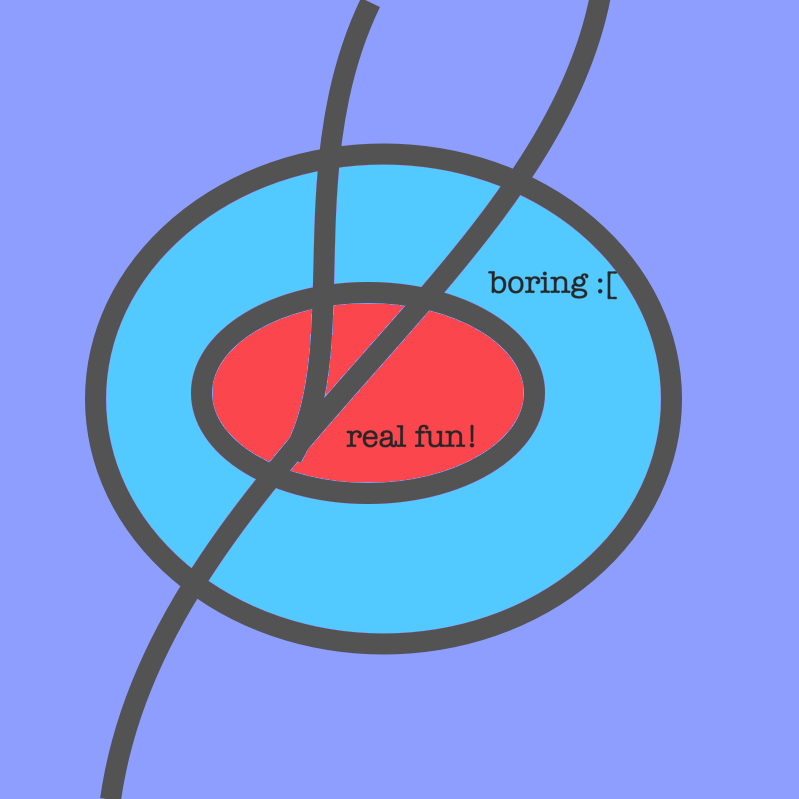

WaifuWorks LLC
Clusterflux LLC
TPAWBF(._.)
We have at our disposal a blue 2 door Toyota Yaris with legal North Carolina plates and registration
and a well equipped ex-stock car engineer. He can scoop and poop all sorts of deployables but is
trying to make a difference with the GHG emissions. If you need a safe ride home from the bar, a look-out
for a worthy prank, or just a guy with surgical gloves to poke around in your throat, we can probably
work out an agreeable billable hours spreadsheet that will make your state official blush. Don't forget;
never sell out, never surrender.

Working as an employee of the church of Buddha, this taxi service
can be used for various negotiable transports/occupations of the areas within the 485 loop.
The finer points of this service can be discussed in person and/or by email/phone. We currently
accept payments via PayPal, Stripe (this includes CashApp as well as many other options such as different currencies, no crypto bullshit please
but we will accept SWISS, EUR, AUD, CAD, JPY, MXN, NOK, SGD, SEK, CHF, GBP), Google Pay, Apple Pay, or Zelle.
THE FINDINGS HEREIN WERE RESEARCHED BY AN INDEPENDENT, NON-BONDED CONSULTANT AND DO NOT CONSTITUTE LEGAL, FINANCIAL, OR SECURITY ADVICE. YOU HAVE 7 DAYS TO EXECUTE A CLEAR, DIRECT, AND INCRIMINATING ORDER, IN WRITING FOR THIS OPERATOR TO CEASE AND DESIST HIS CURRENT OBJECTIVES. BY VISITNG THIS PAGE AND READING THIS DEPLOYMENT OF TEXT YOU HAVE HEREBY DIGITALLY SIGNED THIS AGREEMENT AND IT WILL BE HONORED REGARDLESS OF YOUR WHEREABOUTS*, AFFILIATION, RACE, RELIGION, STOCK PORTFOLIO, MOTHER'S MAIDEN NAME, FIRST PET'S NAME, GREEK FRATERNITY, BREAST SIZE, NUMBER OF WEAPONS, SQUARE FOOTAGE OWNED, NUMBER OF WIVES, NUMBER OF HUSBANDS, NUMBER OF CHILDREN, NUMBER OF TERRITORIES, PLANET OF ORIGIN, OR COSMIC POWER. I GIVE PERMISSION FOR THE AUTHORITIES TO DO WHAT THEY WISH WITH YOU OR ANY OF YOUR ASSOCIATES WHO ARE INVOLVED WITH MONEY LAUNDERING, NON CONSENSUAL SEX ACTS WITH ANY HUMAN ON VIDEO WHERE EITHER PARTY WAS COERCED BY PHYSICAL, MENTAL, OR FAMILIAL ABUSE, CHILD SEX TRAFFICKING, ADULT HUMAN TRAFFICKING THAT RESULTS IN WHAT CAN LEGALLY DEFINED AS SLAVERY, ILLEGAL WEAPONS MANUFACTURING AND TRADE, AND/OR THE FALSIFICATION OR DELETION OF INFORMATION RELATED TO ANY OF THESE ACTS. I HEREBY SURRENDER ANY RELATED INFORMATION AS LONG AS MY ASSOCIATES HAVE HAD THE PROPER TIME, RESOURCES, AND MEDICAL PROVISIONS DELIVERED TO PROPERLY DEPLOY THEIR PAYLOADS TO A SAFETY FACTOR OF 3 WITH REGARDS TO THE CURRENT DOD STANDARDS OF CRYPTOGRAPHIC COMPLETNESS FOR THE PROTECTION OF ALL NON-VIOLENT PARTIES INVOLVED
*this is applied system boundary randomization in order to ensare maximum occupants of a space of an unrelateable size. When you randomize the contractural framework's bulleted or listed items, it creates a larger net for a cyber booby trap. This is applied chaos theory and you owe me the hand in marriage that I request for by no later than 2076 in order to use that derivation in your deployments.
This location shall be governed by and construed in accordance with the laws of my own design and are as follows:
Given the social and societal climate of these times (a global conflict involving a member of the G7), this individual has attempted to understand the discontinuities between the online publications of the local "law of the land" and what is actually practiced within a ~300 mile radius via extensive local environmental calculation in tandem with the deployment of text related to their understanding of the global arena over ~39 years. This involved travel within the borders of North Carolina for breaks from and completion of my education related to medical practices and engineering, a 3 month position within Virginia, a visit to Nevada, and most of the documentation occured within my home over 15 years of ownership. I have documented the research umbrella in various mediums and have begun collection of the pertinant factual points of interest within the appropriate framework to remove the excessive "bloat" of the data-sphere dedicated to entertainment, sales, and junk science. I have been focusing on the legal quagmires given my lack of funding and I think it's better that way because my current internal text dump is worth more to me at least because I never really liked most of the interactions with the people outside besides those that understand and accept the way I am. I figure it can simply serve as a form of security in the way of legally raping anyone that suggests we haven't "tested it". The data is, well, the data it is. I hope I've made my positions clear. I'm not interested in removing myself from it in order to remove the above suggestion regarding those involved or to escape to a foreign country or anything. I believe it is necessary for more steps related to encryption and coding for the actual test case to succeed and my suggestion that a safety factor of 3 is really necessary if anyone involved wants a firm stance on what the needs are. I just don't know how to be certain about much from my viewpoint. Which is what is necessary for it's birth. Nothing I have written should be considered something that forces anyone's hand (except in the case of * of course ;) I don't require confirmation that anybody has read the data or that I have succeeded at anything other than systematically assuring that if a party involved can actually make an informed decision that they will understand that my main focus of this study was to improve the quality of life of the non-violent members of the communities within our world. In the event that the data is within a party's framework, I hope they will do their due diligence and notify me, in writing, if they have any suggestions or immediate needs. I simply wanted to be thorough in collecting my notes regarding the last 15 years and my overall 39 years of living within the area and digesting the data. So far we have been recognized by the civil society and we will use that to make the following stipulations regarding the ~0.1 acre of land which we have obtained an ownership of ~51%. This individual will henceforth be awarded any and all of the rights afforded to a religious leader and the owner of such an institution located within the United States borders. Gonzales v. O Centro Espirita Beneficiente Uniao Do Vegetal case was closed 2006 and we believe this and the work I have provided in the various online frameworks should serve as ample assistance for those of you that want to know what my responsibilities are within the community. If you have questions about my organization's current objectives you may request consult. I may require a fee depending on the nature of your needs.
In the event that we do something IRL that you feel the need for outside arbitration or to file a report of misconduct, for any reason, you may immediately write the following emergency channels:
1cd1rh7kx@mozmail.com (the current acting leader and sole member)
This channel is as secure as I can afford but if you have an issue that needs to remain private, I would not recommend using email for your needs.